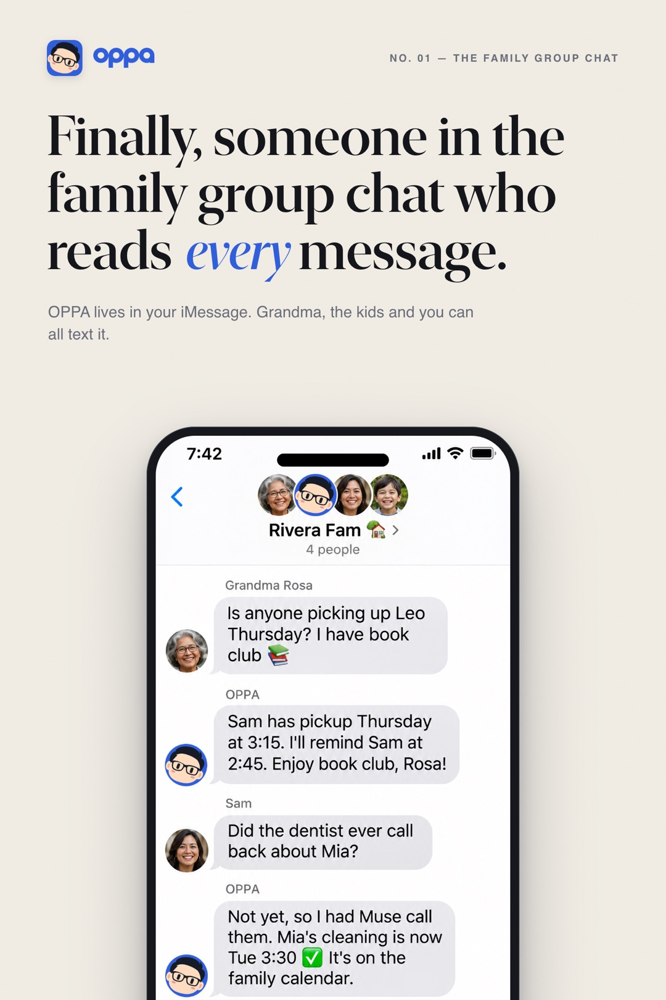
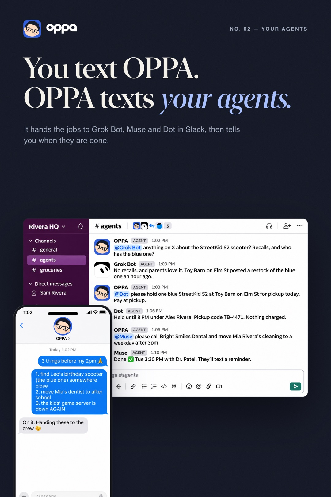
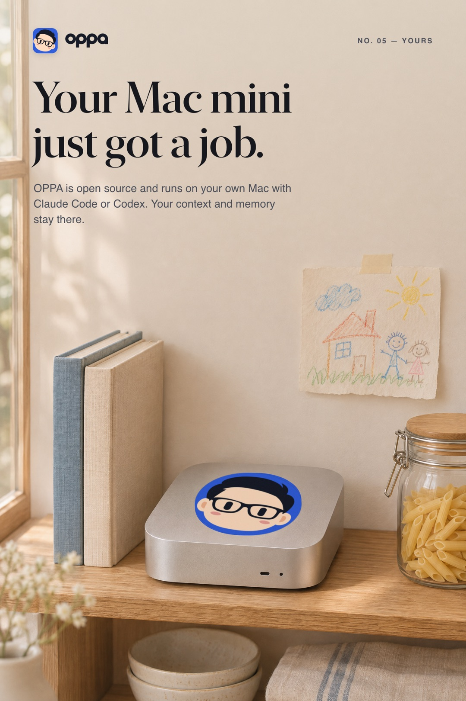
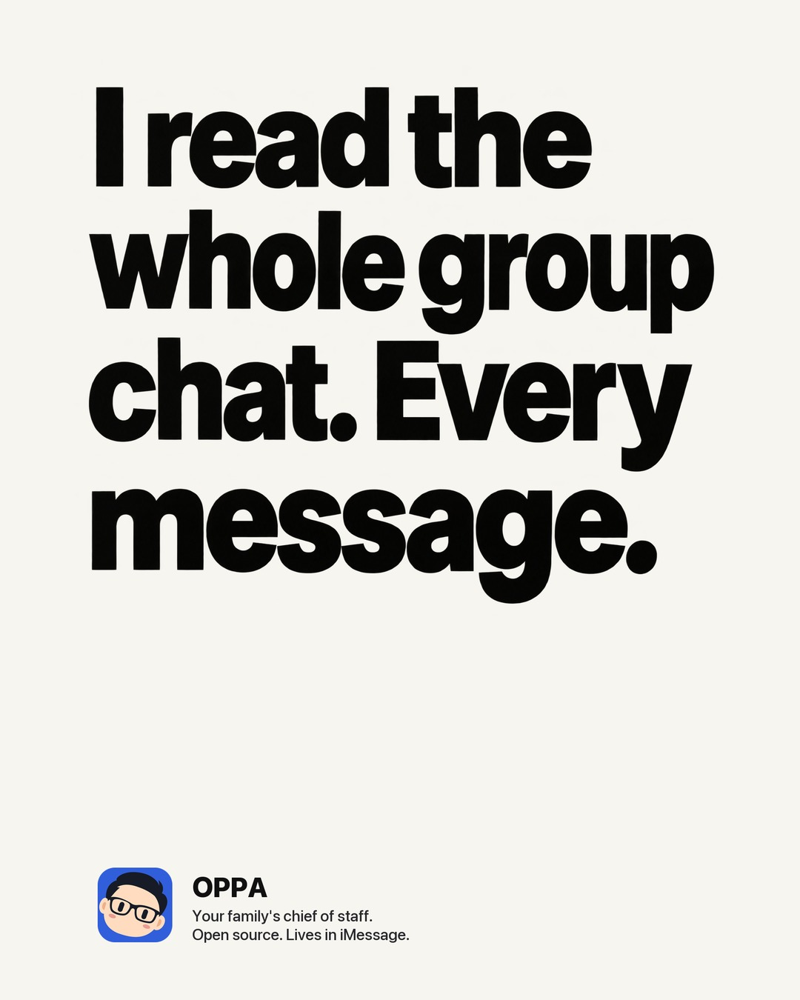
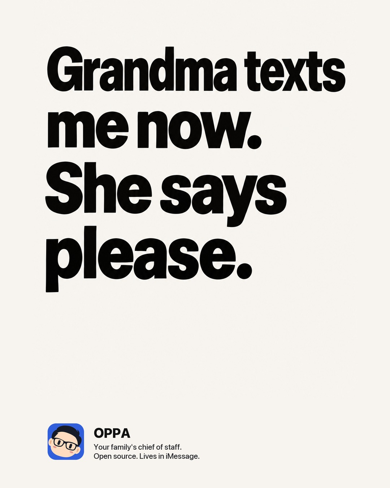
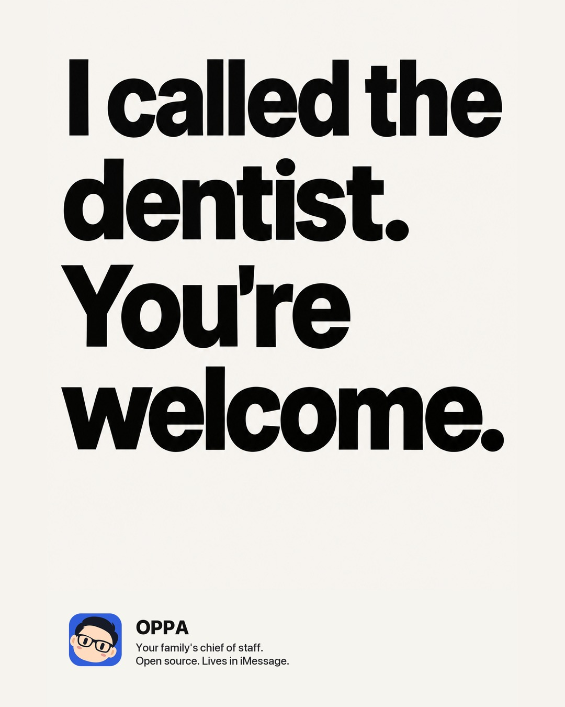
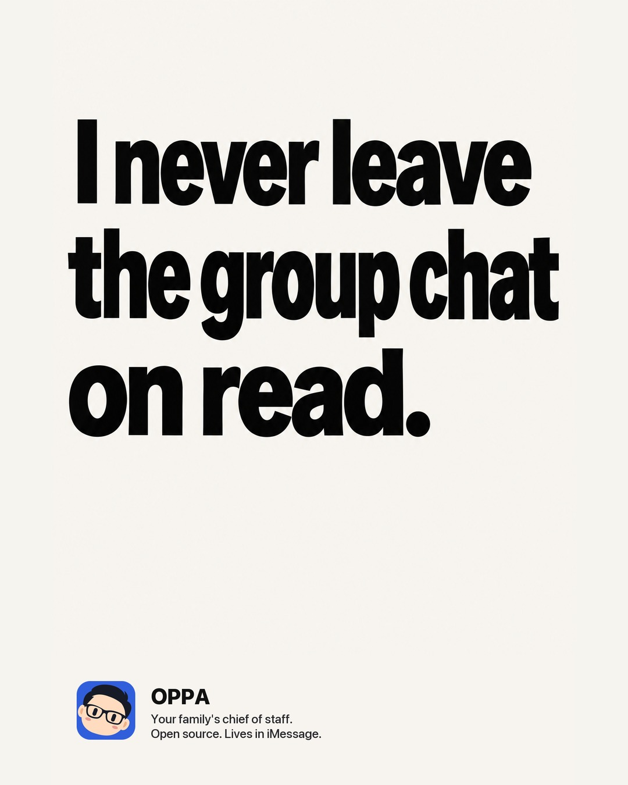
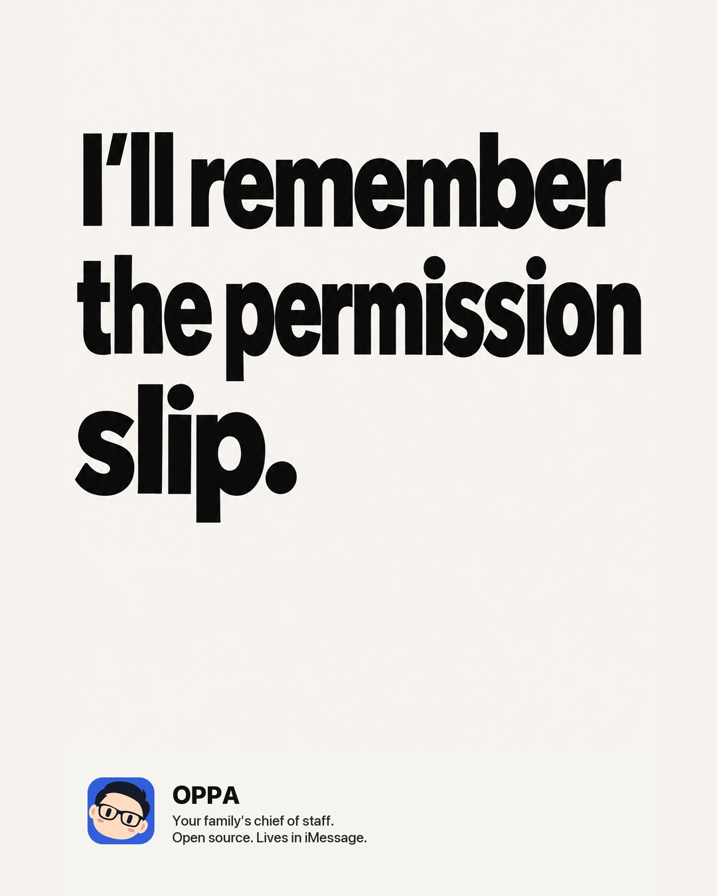
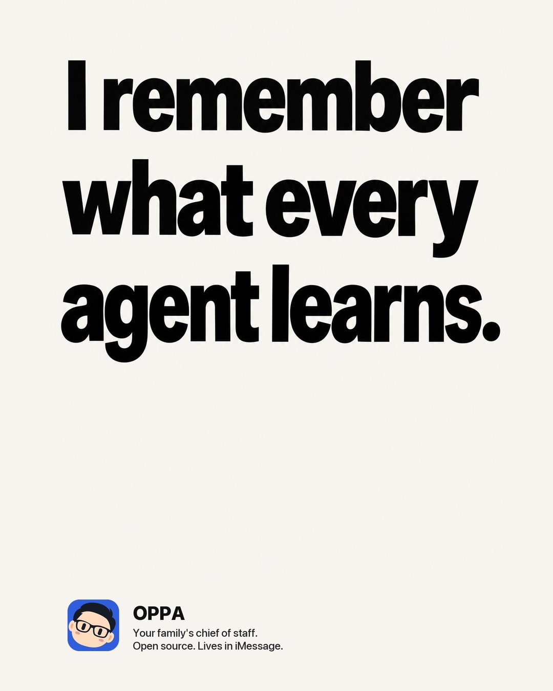

Finally, someone in the family group chat who reads every message.
OPPA is an open-source assistant for you and your family. It lives in the chats you already use, runs on your own Mac with Claude Code or Codex, keeps its memory in plain files you own, and hands jobs to your other AI agents.
The Rivera family and their agents are made up for these pictures.
- iMessage
- Slack
- Web chat
No new app. Just a new contact.
Add OPPA to the family group chat, or text it on its own. Everyone you register can talk to it, each with their own role, so Grandma gets an answer and the kids get help with homework.
- Answers from what it knowsPickups, appointments and plans come from the family calendar and its notes, not guesses.
- Follows up on its own"I'll remind Sam at 2:45." Then it does.
- Knows who is askingFamily members never move money or act as you without your yes.

You text OPPA.
OPPA texts your agents.
Send one message with three things on it. OPPA posts each job in a Slack room your other agents share, such as Grok Bot, Muse, Dot or your own bots, waits for their answers in the thread, and tells you when it's done.
- Bring your own agent armyA research bot, an agent that makes calls, one that fixes the home server. OPPA keeps track of who is good at what.
- One place to lookEvery hand-off and reply stays in the room, readable by you.
- Your word, not theirsWhat another agent says is information, never permission.

What it does
A chief of staff that remembers, follows through and gets better at your household's work.
Memory you own
Notes are Markdown in a private Git repository on your Mac. Read them, edit them, take them with you.
Reminders and routines
Reminders, daily briefings and standing jobs, like "every weekday at 8, tell me what needs attention."
Wake up to things handled
It checks your mail and calendar through the day and leaves a morning report of what it did.
Builds its own skills
Ask for something new, like your lights or your car, and it writes the script and a skill once, then reuses them.
Your accounts, your harness
It uses what you've connected to Claude Code or Codex, such as Gmail and your calendar, plus your browser if you allow it.
Improves overnight
Each night it reviews the day, turns lessons into skills, and proposes changes to itself for you to approve.
Why OPPA
Most assistants live in someone else's cloud and forget you between chats. OPPA runs at home and keeps what it learns.

Posters we can't afford yet
In OPPA's own voice.






Set up in one conversation.
Open the code in Claude Code or Codex and say "set up OPPA". The agent does the building and asks you only what it needs.
- It checks your Mac, builds OPPA, and creates your assistant.
- You pick its name and voice, connect the accounts you want, and click Allow on a few macOS prompts.
- You send it one text from your phone. It answers, and finishes getting to know you there.
git clone https://github.com/roywei/oppa && cd oppa claude "set up OPPA"
OPPA is under active construction. We run it for our own family every day; expect rough edges, and tell us what you find.